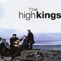

Celtic Lyrics Corner > Shows > The High Kings > Will Ye Go Lassie, Go?
|  | Will Ye Go Lassie, Go? |
| Credits : | Traditional |
| Appears On : | The High Kings (soundtrack) |
| Language : | English |
| Other Versions : | " Wild Mountain Thyme " on Tannahill Weavers' album Dancing Feet |
Lyrics :
Chorus (after each verse)
:
Will ye go, lassie, go?
And we'll all go together
To pluck wild mountain thyme
All around the blooming heather
Will ye go, lassie, go?
I will build my love a bower
Near yon pure crystal fountain
And on it I will pile
All the flowers of the mountain
If my true love, she were gone
I would surely find another
Where wild mountain thyme
Grows around the blooming heather
Oh the summer time is coming
And the trees are sweetly blooming
And the wild mountain thyme
Grows around the blooming heather